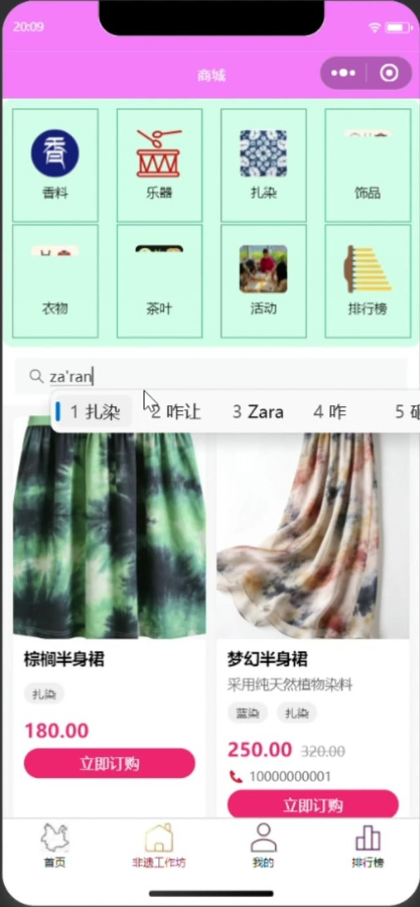
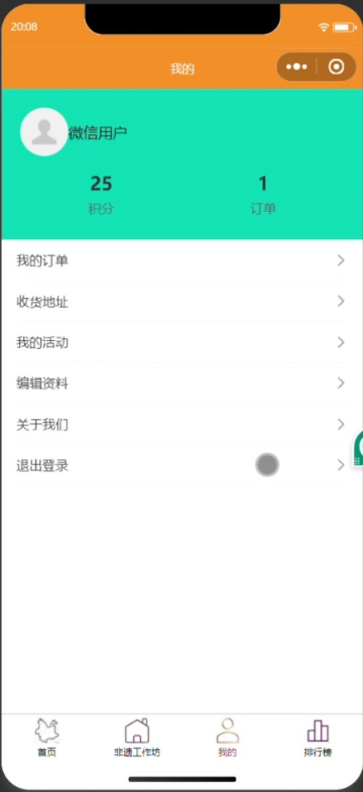
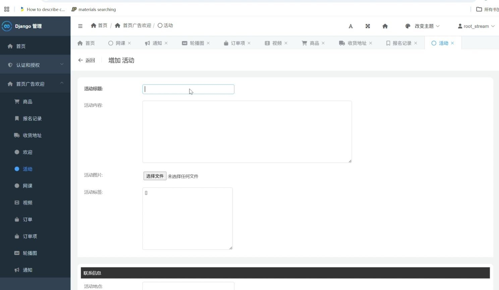

看 · 了解技艺
01
YUNNAN · CRAFTS IN MOTION
让云南手艺，
被看见，也被体验。
从一张云南地图出发，遇见非遗影像、线上课程、手作好物与线下体验。让传统，不止被看见。
看见一门手艺，走近一种生活
看见 · 学习 · 选购 · 参与

从云南地图，开启一段手艺旅程
实机页面
非遗文化
就在身边
就在身边
4种走近手艺的
体验方式
体验方式
发现一门手艺 ✳读懂一段来历 ✳亲手体验一次 ✳把文化带进日常 ✳
01 A CULTURE, A JOURNEY
不必远行，
从地图遇见云南手艺。
从地图找到入口，从影像认识技艺，再沿着课程、商品与活动，发现你和非遗之间的连接。
EXPLORE BY PLACE
点亮一处，
点亮一处，
打开一段手艺故事。
点选地图区域，弹出视频内容预览；从一帧真实页面，走进非遗故事。
点选地图，看看一段手艺影像。
当前各点位均展示皮影戏示例；项目视频尚无地区关联数据
YUNNAN · 云南点选一处，遇见手艺
从地域出发，遇见非遗
点击任意区域 · 打开一段影像预览
让文化不只被观看。
看见它，听见它，再亲手靠近它。
02 YOUR WAY INTO HERITAGE
看、学、逛、参与——
总有一种方式，与你有关。
从第一次好奇开始，挑一条你喜欢的非遗体验路径。
浏览方式
4 个体验入口
 学 · 跟着课程
02
学 · 跟着课程
02

逛 · 非遗工坊 03 参与 · 线下活动
04
参与 · 线下活动
04
页面中的课程、商品与活动名称取自现有演示资料；具体内容以小程序实际展示为准。
03 MINI PROGRAM · INTERACTIVE WALKTHROUGH
不止于看见，
亲手点开这段体验。
切换实机页面，或按“地图 → 视频 → 动手试试 → 原材料”继续。这里是本地界面演示，不会调用微信登录、下单或线上接口。
首页地图 · 实机页面
实机截图 · 可交互页面路径
从首页地图进入内容
首页的云南地图由 9 块拼图组成；小程序点击拼图会打开对应的视频详情。点击下方按钮模拟进入演示视频。
步骤 1 / 3
示例视频截图为皮影戏视频详情；实际视频内容由小程序接口返回。
演示使用产品中的实机画面与静态数据。真实报名和订单需在微信小程序内登录并连接部署中的服务。
更多小程序页面
点击图片切换演示画面
04 CRAFTS & EVERYDAY LIFE
手艺不远，
就在日常之间。
点选入口，下面会显示后台商品库中对应的真实商品图片、名称和售价；没有对应商品记录的分类会明确显示为空。
来自小程序后台商品记录
13 件商品
全部商品
当前后台暂无这个分类的商品
分类入口已在小程序中设置；现有商品数据中没有匹配项目，因此不虚构商品。
商品图片、名称、价格与标签取自本地后台数据库快照。商品分类按当前商品的分类标签、文化标签及商品名称筛选；线上订单需在微信小程序内完成。
05 A SIMPLE GUIDE
想看、想学、想参与？
从这里找到你的下一步。
按你想做的事选择路径。以下说明基于当前小程序页面与产品演示整理。
文化浏览与学习
先被一门手艺吸引，
非遗网课 · 实机页面
先被一门手艺吸引，
再顺着兴趣往下走。
从地图和影像认识非遗，再进入课程，了解技艺如何一步步完成。
- 01
从首页地图发现
进入小程序首页，浏览主题内容；点击地图拼图入口，打开对应的视频详情。
- 02
选择视频或网课
在视频页观看非遗项目介绍，或在网课列表查看课程讲师、价格与学习入口。
- 03
打开课程开始学习
点击课程卡片上的“学习”；有教学视频的课程可播放，视频结束后可收起。
商品浏览与订购
挑一件喜欢的手作，
非遗工坊 · 实机页面
挑一件喜欢的手作，
让传统走进日常。
工坊提供商品分类、搜索与商品信息查看。订购前可在个人中心维护收货地址。
- 01
进入非遗工坊
按香料、乐器、扎染、饰品、衣物、茶叶等分类浏览，也可搜索商品名称或描述。
- 02
查看商品并选择数量
商品卡片展示名称、描述、价格及相关标签；点击订购入口后，按提示填写数量。
- 03
登录并完善收货信息
订购需登录。需要收货信息时，先在个人中心填写收货人、联系电话和详细地址，再查看“我的订单”。
线下活动报名
走进一场活动，
报名记录入口 · 个人中心实机页面
走进一场活动，
亲自感受手艺温度。
活动信息包含介绍、地点与联系信息；报名表支持填写参与人数和备注。
- 01
浏览活动列表
查看活动介绍、地点、联系电话及报名状态；也可从活动查看相关商品。
- 02
登录后填写报名信息
选择尚未报名的活动，填写姓名、微信号、参与人数与选填备注。
- 03
提交并在个人中心查看
提交报名后，可在个人中心进入“我的活动”查看相关报名记录。
小程序中的部分操作需要登录；具体商品、课程与活动信息以实际页面为准。
06 CULTURE IN FOCUS
人气从哪里来？
看见手艺被关注的方式。
商品、视频与活动数据汇成文化热度，让每一种关注都有迹可循。下方为本地数据库快照，并非线上实时榜单。
商品未取消订单的商品数量 × 2
视频视频浏览量
活动报名参与人数
同一文化标签下的商品、视频与活动热度会相加；排行榜由数据计算，不是在后台手动拖拽排序。
文化标签热度本地演示数据快照
商品销量视频浏览活动报名
-
01扎染142商品 126 + 视频 0 + 活动 16
-
02蓝染122商品 122 + 视频 0 + 活动 0
-
03皮影戏64商品 24 + 视频 40 + 活动 0
其余标签藏香 14饰品 8藏族文化 4

07 YOUR PERSONAL SPACE
每一次参与，
都留有一份记录。
个人中心集中管理用户资料与常用入口。登录后可查看积分和订单数量、维护收货地址、查看我的活动与订单，或编辑个人资料。
演示中的个人中心画面显示积分 25、订单 1；实际内容随账号数据变化。
08 DJANGO BACK OFFICE
移动端之外，
还有可拓展的管理后台。
基于 Django Admin 与 SimpleUI 的后台管理能力，可维护内容、用户和业务记录。内容标签、活动地点等支持按实际运营区域配置；如需更换首页地图或改造地区入口，则需相应前端定制。

DJANGO ADMIN · GOODS
商品资料，在后台集中维护。
商品后台提供关键词搜索和类型、文化标签、商家编号、创建时间筛选；可维护商品图片、成品或原材料类型、描述、价格、文化标签、分类标签、商家信息及“是否删除”状态（项目没有独立库存或上下架字段）。
- 01成品与原材料管理
- 02文化标签与分类检索
- 03价格、商家信息与排序

DJANGO ADMIN · ACTIVITY
活动与报名记录，关联管理。
后台可维护活动标题、内容、图片、标签和联系信息；报名记录独立管理，并关联对应活动。订单与订单项分别登记，后台还可维护课程及课程视频。
- 01活动内容与联系信息
- 02活动报名记录与人数
- 03订单、订单项与课程
09 ADMIN & EXTENSIBILITY
登录后台，
四步管理日常内容。
使用已配置的管理员账号访问 /admin/，集中维护商品、课程、视频、活动与订单。
标签与活动地点可按运营区域配置；更换地图或地区入口需定制前端。项目未提供公开演示账号。
- 01
上新内容
在商品、网课或视频中新增与编辑图片、价格、标签和排序；保存后检查小程序展示。
- 02
发布活动
填写活动内容、图片、地点与联系方式，在关联报名记录中查看姓名、人数和备注。
- 03
跟进订单
按状态筛选订单，核对商品与收件信息，并按履约进度更新订单状态。
- 04
持续维护
维护用户、地址、轮播图和通知；排行榜根据订单、视频浏览与报名数据自动汇总，不支持手动改热度。
下方操作说明依据 smart_backend\biye\models.py 与 admin.py 的模型及管理配置整理。后台管理功能需在部署并配置管理员账号后使用；此项目未提供公开演示地址或账号。